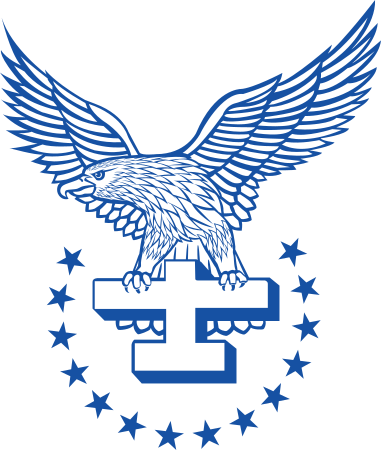
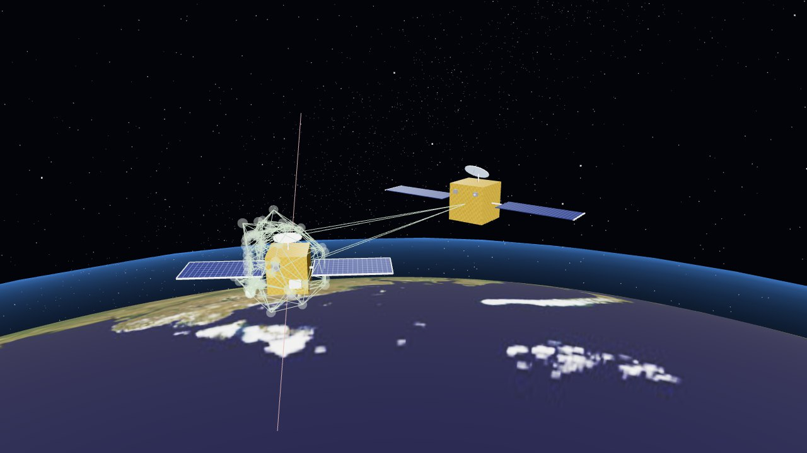
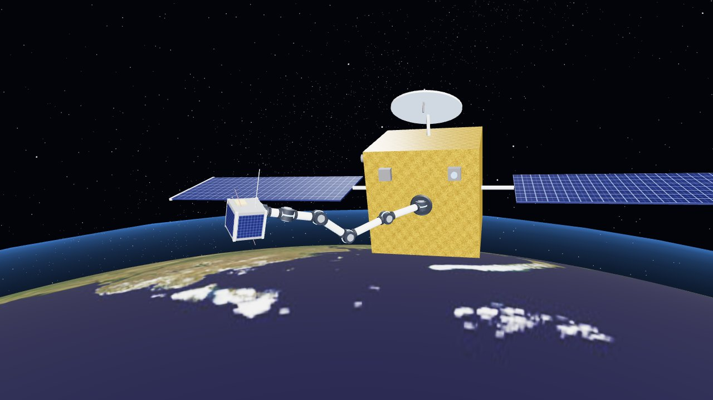
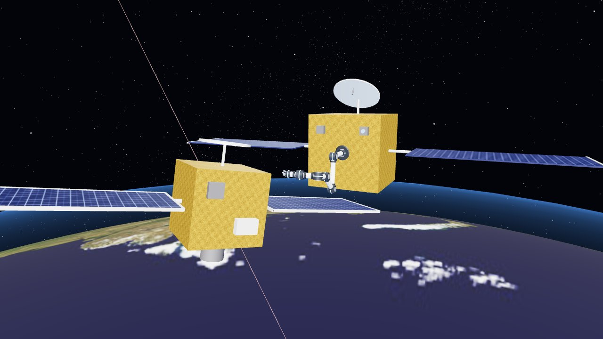
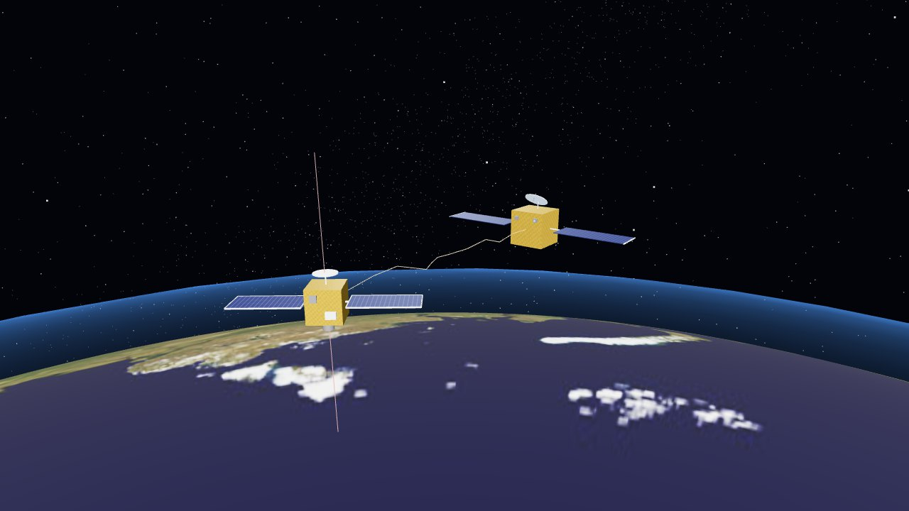
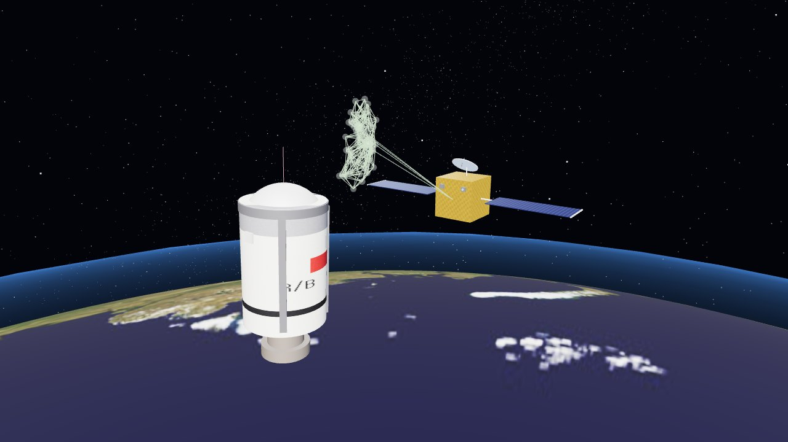

소형10 kg 큐브샛
1위로봇팔
88.2%
회전하는 대상 포획 성공률
- 로봇팔88.2%
- 그물18.9%
- 작살10.2%
로봇팔 · 그물 · 작살의 물리 시뮬레이션 기반 정량 평가

지구 저궤도 파편은 대부분 회전하고 있어, 제거하려면 회전체를 안전하게 붙잡아야 한다. PyBullet 다물체 동역학에 상대 궤도 역학을 더해 세 방식을 같은 조건에서 비교했고, 대상과 서비스 위성의 상대 각속도가 1 deg/s 이하로 잦아들어 3 초 이상 유지되면 성공으로 셌다.

그물 포획 리플레이 보기세 대상은 질량만이 아니라 형상과 관성도 다르므로, 결과는 질량 하나의 효과가 아니라 대상 전체의 차이다. 큰 숫자와 순위는 회전하는 대상(2–30 deg/s)만 모은 방식별 포획 성공률이다(조합마다 450회). 곡선은 정지(0 deg/s)를 포함한 회전 속도별 성공률이고, 음영은 1위 방식의 95 % 신뢰구간이다.
그물 0 %는 회전하지 않는 대상에서도 0 %다. 한 변 5 m 그물이 지름 2 m·길이 3 m 원통(외접 지름 3.6 m)을 감싸지 못한 그물 크기의 한계이며, 더 큰 그물로는 달라질 수 있다.
본 실험은 중형 대상을 z 축으로 돌렸다. 같은 시드로 x·y 축을 돌린 2,700회를 더해 비교했다(축·방식당 450회). 1·2위 차이의 p 는 Holm 으로 보정한 McNemar 검정 값이다.
포획은 성공 여부만으로 끝나지 않는다. 성공률을 뺀 네 지표는 막대가 짧을수록 좋다. 감속 시간은 회전 대상에서 성공한 시행의 중앙값(로그 눈금), 잔류 상대 각속도는 중앙값, 최대 충격량과 서비스 위성 자세 변화는 정지를 포함한 전체 시행의 평균이다. 원고 표 2·3 과 같은 기준이다.
| 대상 | 방식 | 회전 대상 성공률높을수록 좋다 | 감속 시간성공 시행 중앙값 | 잔류 상대 각속도deg/s | 최대 충격량N·s | 서비스 위성 자세 변화평균 |
|---|---|---|---|---|---|---|
| 소형10 kg 큐브샛 | 로봇팔 1위 | 88.2 % | 1.2 s | 0.00 | 2.4 | 21° |
| 그물 | 18.9 % | 114 s | 3.21 | 3.3 | 31° | |
| 작살 | 10.2 % | 138 s | 3.81 | 10.6 | 53° | |
| 중형500 kg 위성 | 로봇팔 | 12.4 % | 2.3 s | 12.03 | 7.3 | 140° |
| 그물 1위 | 71.8 % | 62 s | 0.61 | 136.8 | 144° | |
| 작살 | 14.0 % | 47 s | 3.90 | 130.3 | 158° | |
| 대형2,000 kg 로켓 단 | 로봇팔 1위 | 56.4 % | 2.3 s | 0.06 | 6.3 | 52° |
| 그물 | 0.0 % | 성공 없음 | 16.72 | 0.8 | 95° | |
| 작살 | 5.3 % | 139 s | 4.71 | 211.9 | 167° |
표를 옆으로 밀어 나머지 열을 본다
세 방식을 같은 물리 환경과 같은 판정 기준으로 4,320회, 회전축 추가 실험까지 비교해 얻은 다섯 가지다. 각 카드의 링크로 근거가 되는 결과와 장면을 바로 볼 수 있다.
회전하는 대상에서 1위는 소형 로봇팔 88.2 % · 중형 그물 71.8 % · 대형 로봇팔 56.4 % 였다. 중형의 1·2위 차이 57.8 %p 는 회전축을 바꾸면 6.7~10.4 %p 로 줄어, 회전축도 방식을 고르는 변수다.
로봇팔은 태양전지판 같은 돌출 구조물에, 그물은 대상에 비해 작은 그물 크기에 막혔다. 작살은 대상에 박히는 데에는 대부분 성공했지만, 그 뒤 회전을 줄이지 못했다.
성공해도 감속 시간이 로봇팔 1.2~2.3 s, 그물·작살 47~139 s 로 크게 달랐다. 중형에서 로봇팔과 작살은 성공률로는 구별되지 않았지만(p = 0.13) 잔류 각속도로는 작살이 6.17 deg/s 낮아 뚜렷이 갈렸다.
중형 대상의 그물은 정지 53 % 에서 18 deg/s 90 % 로 오히려 올랐고, 소형 대상의 로봇팔은 14 deg/s 60 % 로 떨어졌다가 28 deg/s 97 % 로 회복했다.
중형 대상에서는 세 방식 모두 서비스 위성이 평균 140° 이상 돌아갔다. 대상의 각운동량이 서비스 위성으로 옮겨 가므로, 방식을 고를 때 서비스 위성의 자세 제어 용량을 함께 따져야 한다.
후속 연구 소형·대형 대상의 회전축 실험, 표면 마찰계수 실측, 윈치 장력 제어와 연성 도킹 최적화, 지상 실험을 통한 외부 검증
중형 500 kg 위성은 로봇팔·그물·작살 장면을 모두 넣어, 같은 대상에서 결과가 어떻게 갈리는지 비교할 수 있다. 물리 엔진이 계산한 궤적을 그대로 재생하며, 시각화는 결과를 바꾸지 않는다.

포획 성공강체로 붙잡아 첫 접촉 후 1.2 s 만에 감속했다. 그물·작살은 같은 감속에 수십~백수십 초가 걸린다 (결론 3). 장면은 앞 8 s 만 기록했다.

포획 실패태양전지판이 서비스 위성과 먼저 부딪혀 파지 단계에 들어가지 못했다. 돌출 구조물이 로봇팔의 약점이다 (결론 2). 장면은 앞 28 s 만 기록했다.
형상과 상관없이 감쌀 수 있는 그물은 태양전지판에 걸려 오히려 유리하다. 중형에서 그물이 1위인 이유다. 장면은 앞 13 s 만 기록했다.

포획 성공포획에는 성공했지만 서비스 위성이 180° 돌아갔다. 대상의 각운동량이 서비스 위성으로 옮겨 온 결과다 (결론 5). 장면은 앞 130 s 만 기록했다.

포획 실패한 변 5 m 그물이 지름 2 m·길이 3 m 원통을 감싸지 못해 붙은 지 1.6 s 만에 벗겨졌다. 대형에서 그물이 0 %인 이유다 (결론 2). 장면은 앞 40 s 만 기록했다.